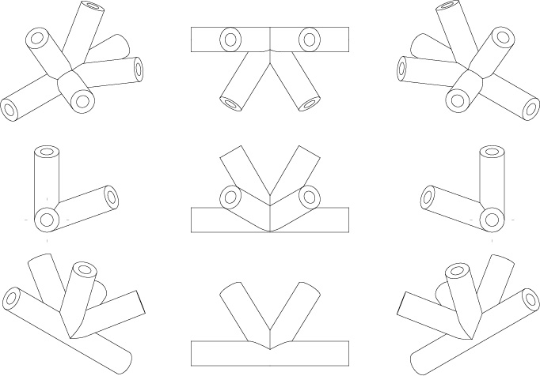
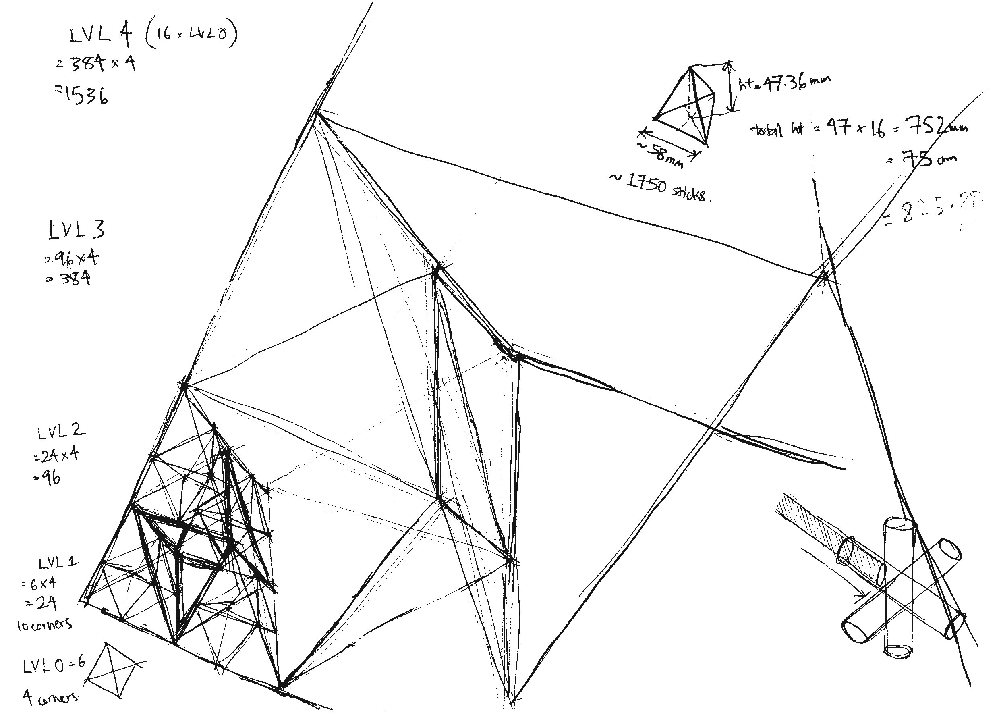
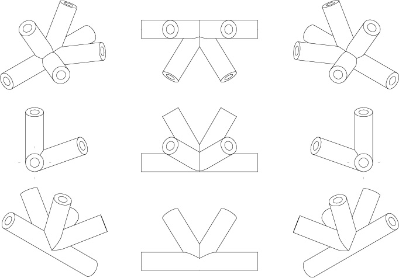
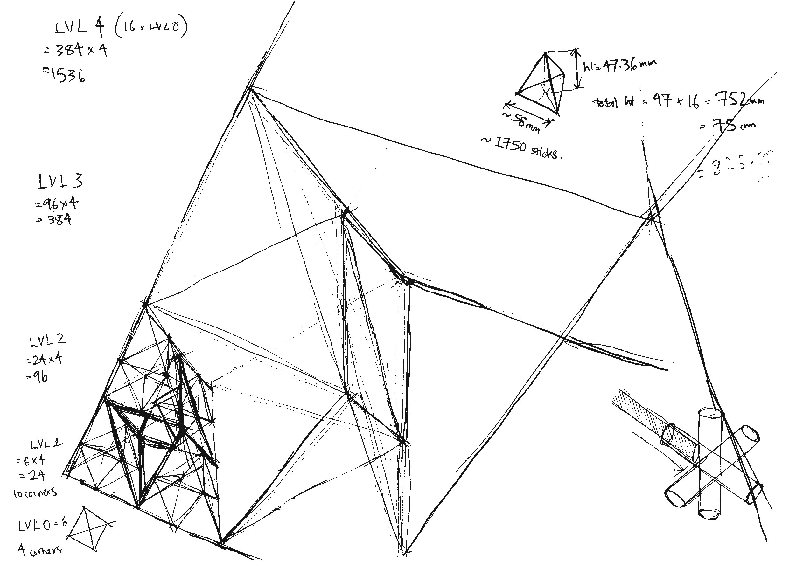
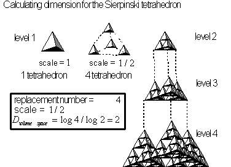
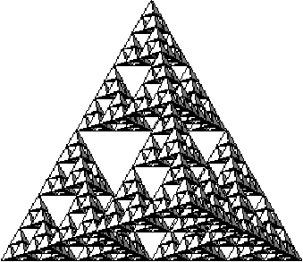

jerome arul
sierpinski tetrahedron
I noticed that the vertices of the sierpinski tetrahedron, an infinitely regressing fractal, were all the same. That single vertex was 3D modeled to hold 1/8" tubing, and printed in ABS. A model was displayed at the Wurks, Providence RI, April 2018.


 



NOTES: The sierpinski tetrahedron has a dimension given by D=log4/log2 or simply an integer Hausdorff–Besicovitch dimension of 2, and correspondingly has no volume. below image credit: bernt wahl from "fractal explorer", wahl.org
 
NOTES: The sierpinski tetrahedron is a regressing 1st frequency subdivision (#2), giving the octahedral nucleus. below image credit: keith critchlow's "order in space"

wanna make a sierpinski triangle?